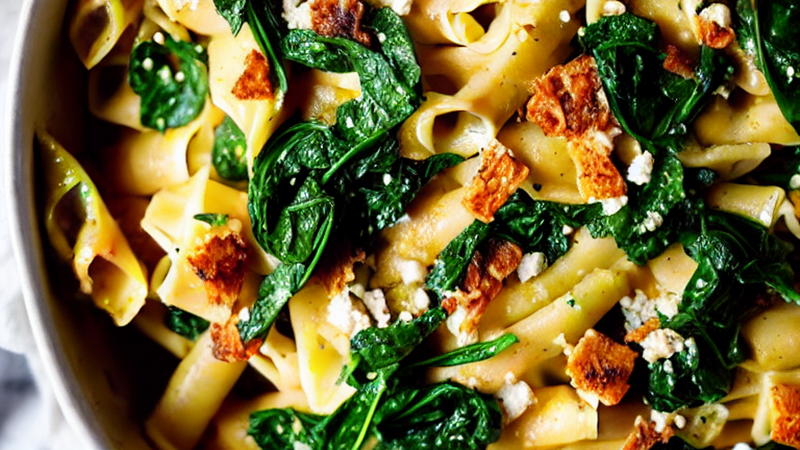
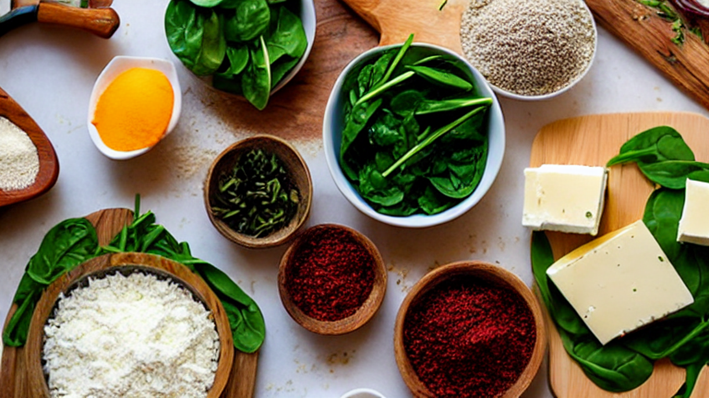
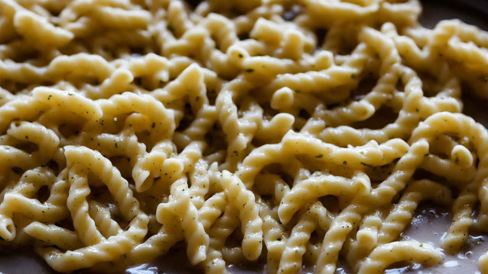
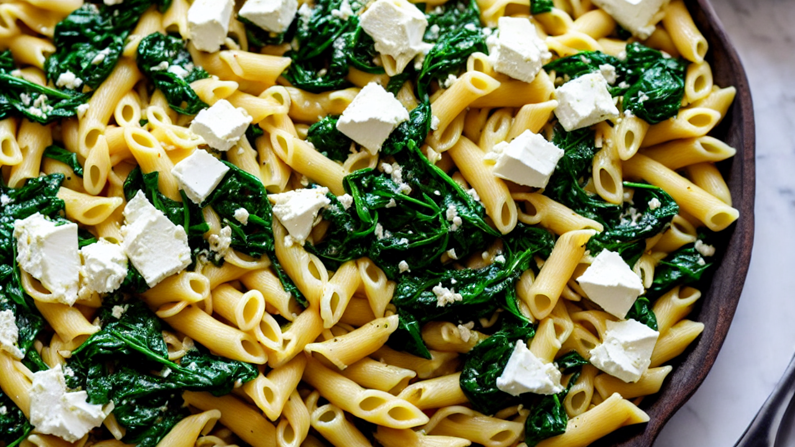
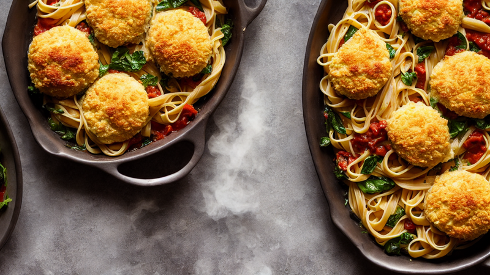
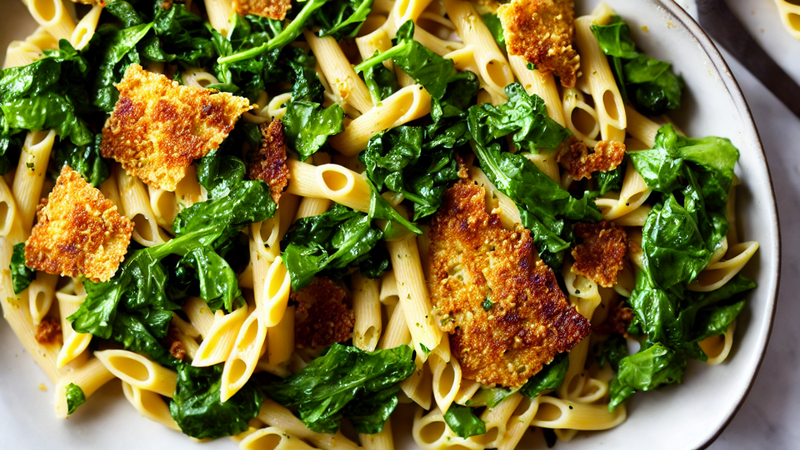
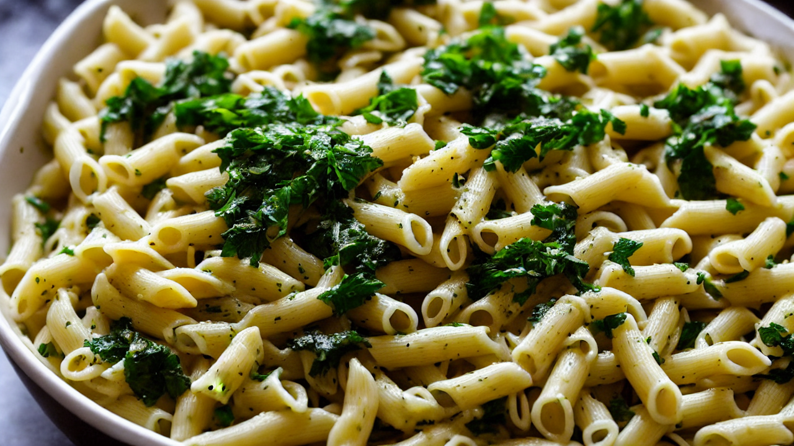
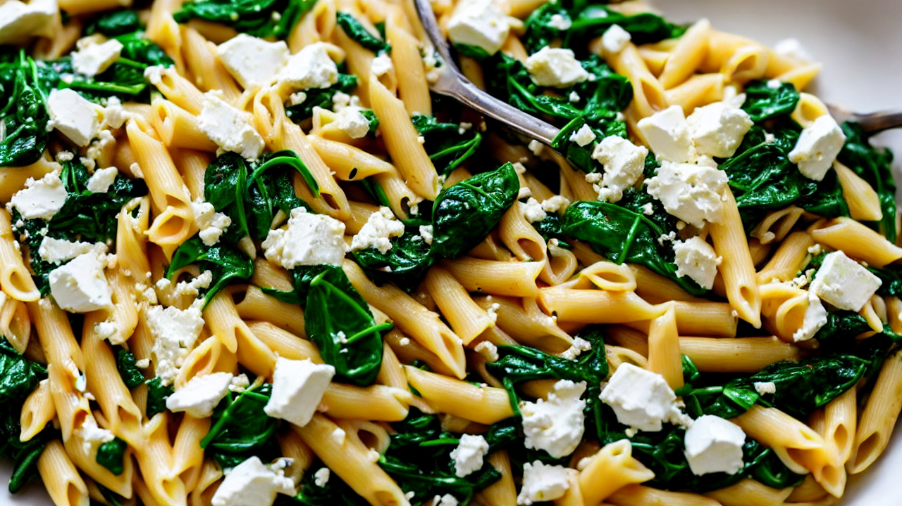

Viral TikTok Baked Feta Pasta | 10-Minute Creamy Delight
This Baked Feta Pasta is so good, you'll never order takeout again! Creamy, cheesy, and packed with flavor—ready in 10 minutes. Perfect for lazy weeknights or impressing guests. #BakedFetaPasta

This Baked Feta Pasta is so good, you'll never order takeout again! Creamy, cheesy, and packed with flavor—ready in 10 minutes. Let’s make it!

You’ll need: pasta, garlic, cream, feta, spinach, Parmesan, chili flakes, and butter. All under $10—no fancy ingredients needed!

Boil pasta until al dente. Drain, then mix with garlic, butter, and a splash of cream for a rich, cheesy base.

Fold in crumbled feta and fresh spinach. Let it sit for 2 minutes until spinach wilts and feta melts into the sauce.

Transfer to a baking dish. Top with Parmesan and chili flakes. Bake at 375°F until golden and bubbly—about 15 minutes!

Let it rest for 2 minutes before serving. The cheese will firm up, and the flavors will deepen—pure magic in a bowl!

Garnish with extra parsley and a drizzle of olive oil. This dish is so good, you’ll want to eat it with your hands!

Grab a fork, take a bite, and thank me later. Subscribe for more recipes like this—because you deserve to eat well every day!